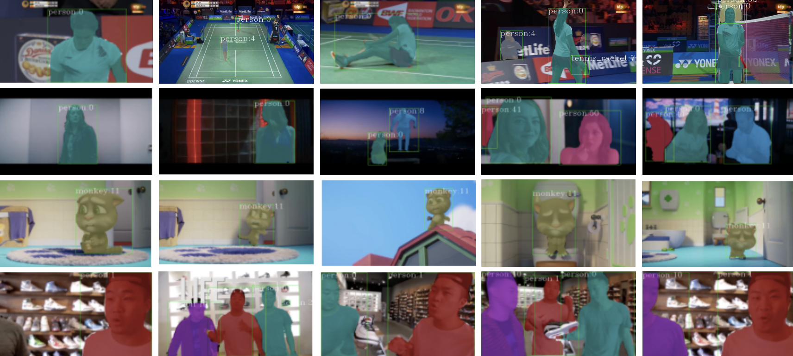

|
Roshan Roy I'm a second-year MS in Computer Vision student at Carnegie Mellon University, advised by László Jeni. My research revolves around foundational models for 2d-to-3d reconstruction in sparse keypoint-centric settings. Earlier, I was an undergrad in CS at BITS Pilani, advised by Hanspeter Pfister at Harvard University. I also work at Lockheed Martin Research, where I've patented cutting-edge missile trajectory prediction algorithms. In the past, I've worked at Mercedes-Benz Research on Uncertainty Quantification frameworks for autonomous navigation, and at NVIDIA on detection systems for medical diagnostics. |

|
Recent News
|
Select Research |
|
|
Mixed, Not Attended: Why Attention Fails in Unsupervised 3D Lifting
Mosam Dabhi, Roshan Roy* , Ananya Bal*, George Wei, Simon Lucey, László Jeni Under Review, 2025. arXiv Investigating the stability and failure of attention in self-supervised 3D lifting. |
|
|
Jensen Shannon Divergence in Safe Multi-Agent RL
Rushikesh Zawar*, Prabhdeep Sethi*, Roshan Roy* ICLR 2024, Tiny Papers Short Paper Using Jensen Shannon Divergence to improve both safety and performance in multi-agent reinforcement learning. |
|
|
VL4Pose: Active Learning Through
Out-Of-Distribution Detection For Pose
Estimation
Megh Shukla, Roshan Roy* , Pankaj Singh, Shuaib Ahmed, Alexandre Alahi BMVC 2022 Paper A first-principles approach to active learning via estimation of heteroscedatic epistemic uncertainty. |
|

|
YouMVOS: An Actor-centric Multi-shot Video Object Segmentation Dataset
Donglai Wei*, Siddhant Kharbanda*, Roshan Roy , Hanspeter Pfister et al. CVPR 2022 Project Page / Paper Advancing complex, multi-shot video object segmentation. |
|
|
MRSCAtt: A Spatio-Channel Attention-Guided Network for Rover Navigation
Anirudh S. Chakravarthy*, Praveen Ravirathinam*, Roshan Roy* CVPR 2021, AI4Space Workshop Paper A spatio-channel attention-guided network for extraterrestrial rover navigation. |
Projects |

|
Cleaning Casually Captured Splatting Scenes with Diffusion Priors
Roshan Roy, Bhuvan Jhamb, Joel Julin Jeff Tan, Report We fine-tune image-conditioned diffusion models to simultaneously remove ghostly artifacts and infill plausible geometry at novel views. |

|
Are Masked Autoencoders Actually Scalable Spatio-temporal Learners?
Roshan Roy, Eric Cai Kyutae Sim Michaela Tecson Report We investigate if masked video pre-training can serve as a universal backbone for both image and video tasks. |

|
Camera Preconditioning for Neural Radiance Fields in Nerfstudio
Roshan Roy, Sahil Jain, Bhuvan Jhamb, Report We implement a camera preconditioning module for Nerfstudio, which allows for more consistent and stable training of neural radiance fields. |
|
Website under construction as of March 13 2025. Template credit to Jon Barron. |